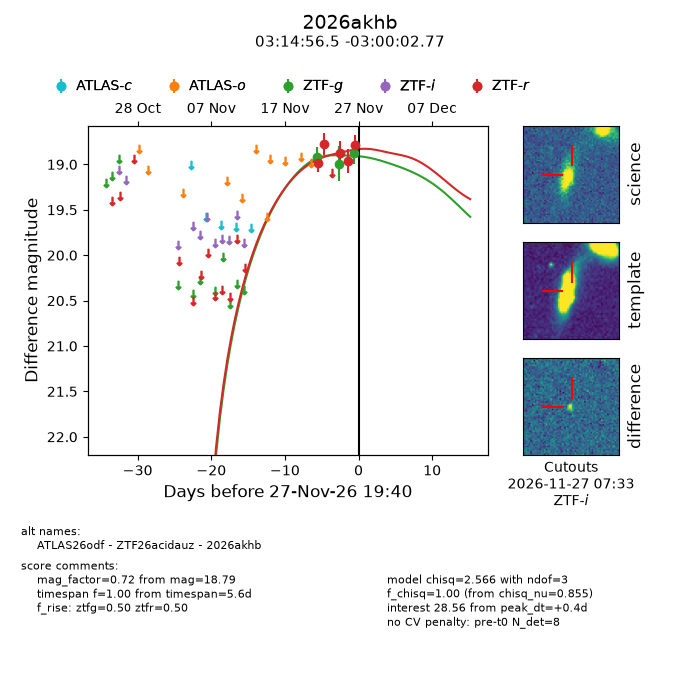
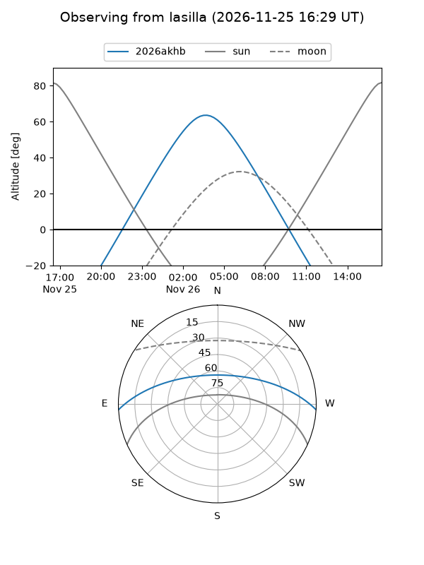
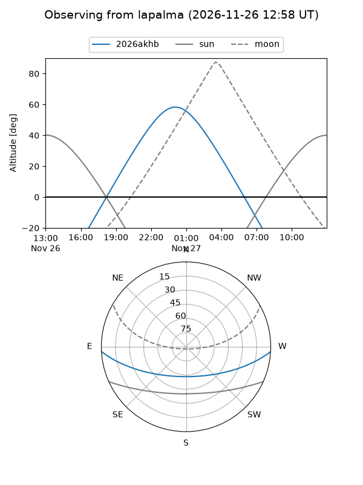
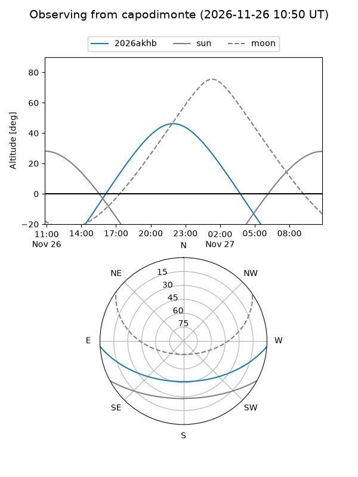
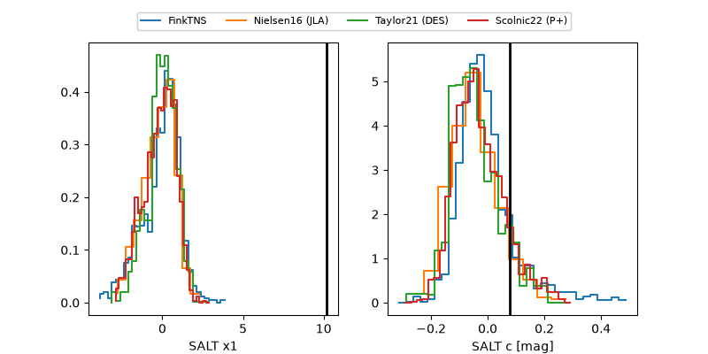

2026akhb
Target 2026akhb at 2026-11-27 19:41
Aliases and brokers:
FINK-ZTF: ztf.fink-portal.org/ZTF26acidauz
Lasair-ZTF: lasair-ztf.lsst.ac.uk/objects/ZTF26acidauz
ALeRCE-ZTF: alerce.online/object/ZTF26acidauz
YSE-PZ: ziggy.ucolick.org/yse/transient_detail/2026akhb
TNS name: wis-tns.org/object/2026akhb
Direct TNS query: direct search
alt names
ZTF26acidauz (ztf,fink_ztf)
2026akhb (tns,yse)
ATLAS26odf (atlas)
Coordinates:
equatorial (ra, dec) = 48.7353,-3.00077
equatorial (HMS+DMS) = 03:14:56.48,-03:00:02.77
galactic (l, b) = (184.0831,-48.07576)
Flags:
peak dt: +0.4
Photometry:
last ztfg=18.87, ztfr=18.79
3 ztfg, 5 ztfr detections
Lightcurve

Visibility



Additional plots
